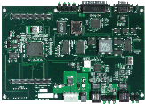

|  |
[11/08/04] Current diagnostics version: 1.1.1 We have released diagnostics source code for a custom board based on the Motorola PowerPC 860T. The diagnostics currently test memory, LEDs, NAND flash, NVRAM, Dallas and PPC RTCs, ethernets connected to SCC1 and the 860T's Fast Ethernet Controller. NEW: Version 1.1.1 now supports PCI, Cardbus, and SCSI. These diagnostics are written so as to be portable to other custom designs based on the 855T/860T, and possibly portable to other embedded Power PC processors. The diagnostics borrow driver code from PPCBoot, and therefore are GPL'd . In other words, the source is provided for free, and in exchange, we would like those who find the source useful to send us their software changes that may be relevant to the MPC 855/860T. These diagnostics require the boot firmware to initialize the MPC and CPM on the 860T beforehand. Only peripherals will be diagnosed, but if you'd like to add processor diagnostics to this package, feel free.. And while you're at it, release them under the GPL, too. Please send any patches, comments, suggestions, etc. regarding these diagnostics to: rchilds@vctlabs.com. Update: 11/08/04 Notable changes in version 1.1.1:
View the README for ppc_diag-1.1.1. Download version 1.1.1 of ppc_diag. Notable changes in version 1.0.4:
View the README for ppc_diag-1.0.4. View the CHANGELOG for ppc_diag-1.0.4. Download version 1.0.4 of ppc_diag. Download 1.0.2 -> 1.0.4 patch. Patch instructions: Place the patch file in the ppc_diag directory. Run the following command at the prompt:
patch -p1 < {patch_file_name}
View the README for ppc_diag-1.0.2. View the CHANGELOG for ppc_diag-1.0.2. Download version 1.0.2 of ppc_diag. (link fixed) View the README file for ppc_diag-1.0.1. Download version 1.0.1 of ppc_diag. |